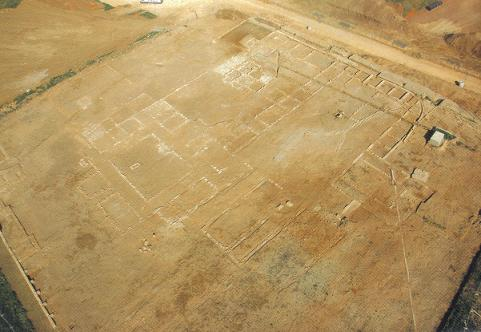

|
Villa romana del pou de la Sargueta
El yacimiento arqueológico del Pou de la Sargueta constituye uno de los mejores ejemplos de asentamiento rural de la C. Valenciana. Se localiza en el Parc Logístic de Riba-roja. Conserva toda la planta íntegra, con la pars urbana, rustica y fructuaria. Su cronología se sitúa entre los siglos I y V.
 (Foto extraída de “libro conmemorativo de la V Ofrenda al río Turia. Ribarroja del Turia, 2010)
Tourist Info |